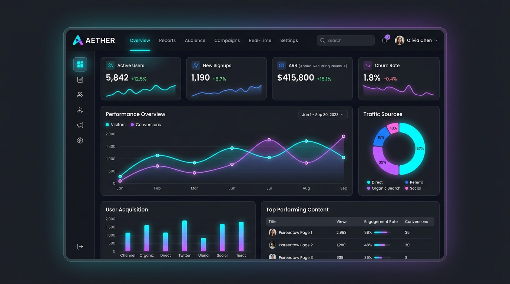
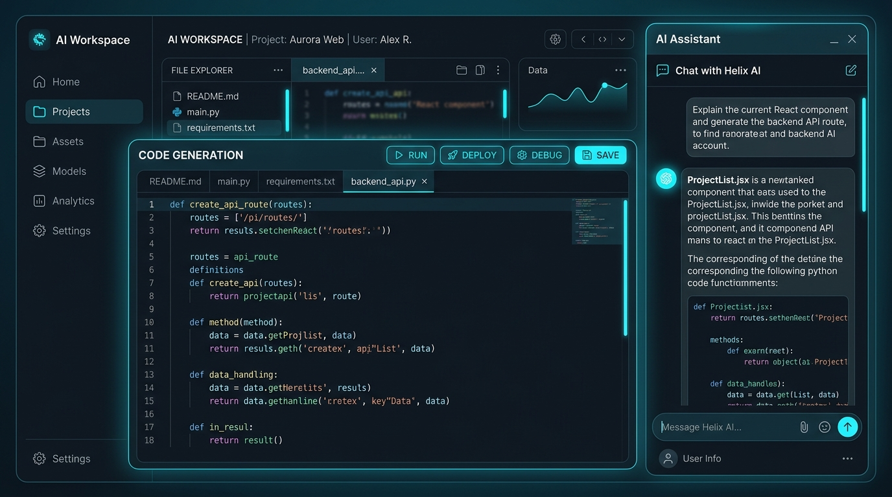

Fresh Graduate Teknik Informatika — Universitas Gunadarma (IPK 3.70 / 4.00)
Berfokus pada pengembangan web (Laravel, PHP, Golang) dan pengoperasian jaringan komputer (NOC). Berpengalaman menangani jaringan pelanggan, memimpin organisasi kepemudaan, serta membangun aplikasi web berbasis AI.
IPK S1 Informatika
Network Operation Center
Web Development
Universitas Gunadarma
Ion Network
Fresh graduate Teknik Informatika Universitas Gunadarma (IPK 3.70 / 4.00) dengan minat utama pada pengembangan web dan jaringan komputer.
Memiliki pengalaman langsung mengoperasikan Network Operation Center (NOC) di perusahaan provider WiFi, terbiasa menangani dan menyelesaikan gangguan teknis pelanggan secara cepat dan sistematis, serta memiliki jiwa kepemimpinan yang teruji melalui organisasi kepemudaan.
PHP, Laravel, Golang, HTML/CSS, JavaScript, MySQL, AI Integration.
IP Address, Subnetting, Routing, Router, Switch, Access Point & Troubleshooting.

Merancang dan mengembangkan platform e-commerce berbasis Laravel yang mengintegrasikan fitur berbasis Artificial Intelligence untuk meningkatkan pengalaman pengguna. Menerapkan konsep pengembangan web full-cycle dari perancangan hingga pengujian.

Merancang dan mengembangkan sistem informasi berbasis PHP untuk mengelola dan menghitung nilai siswa secara otomatis dan akurat. Mengimplementasikan perancangan basis data, fitur input, pengolahan nilai, dan pengujian sistem.
Pengawasan operasional jaringan harian pada provider WiFi, troubleshooting IP address/subnetting/routing, pemeliharaan router & switch, serta penanganan insiden WiFi pelanggan sesuai SOP perusahaan.
Universitas Gunadarma • Sep 2025 & Jun 2026
Sertifikasi pelatihan metode perancangan aplikasi, OOP, arsitektur database, dan efisiensi penulisan kode program.
Universitas Gunadarma • Feb 2024 & Feb 2025
Sertifikasi pelatihan sintaks Go, konkurensi, tipe data, perancangan HTTP server, serta routing API dengan framework Gin & Echo.
Universitas Gunadarma • Agt 2024 & Agt 2025
Pelatihan struktur data C#, Object-Oriented Programming (OOP), Controller, ActiveX Data Object.Net, dan debugging aplikasi.
Universitas Gunadarma • Agt 2023 & Okt 2024
Sertifikasi penguasaan konsep jaringan nirkabel (Wireless LAN), IP Addressing, Subnetting, Routing, serta pemeliharaan infrastruktur jaringan.
Universitas Gunadarma • Feb 2023
Pelatihan fondasi pemrograman web meliputi struktur HTML5, styling CSS3, manipulasi DOM JavaScript, serta pembuatan web interaktif.
Ion Network
Melakukan monitoring dan pengawasan jaringan sebagai bagian dari NOC pada perusahaan provider WiFi untuk memastikan layanan internet pelanggan tetap stabil, aman, dan optimal.
Universitas Gunadarma
Mempelajari dasar-dasar JavaScript meliputi variabel, tipe data, operator, struktur kontrol, fungsi, array, objek, dan manipulasi DOM.
Universitas Gunadarma
Mempelajari sintaks dasar, tipe data, variabel, kontrol alur, dan fungsi dalam bahasa Go.
Universitas Gunadarma (IPK 3.70 / 4.00)
Menyelesaikan pendidikan Sarjana Teknik Informatika dengan fokus pada Web Development, Network Engineering, dan AI Implementation.
Pemuda Pemudi Gereja
Saya siap berkontribusi sebagai Web Developer maupun Network Support di lingkungan kerja yang dinamis.
jevontamba8@gmail.com
081285324814
linkedin.com/in/tambahotasi
Jakarta, Jakarta Timur